Je me souviens encore du moment où j'ai eu ma première console, en janvier 2009, j'ai reçu une xbox 360. Depuis ce jour, je n'ai cessé de jouer à des jeux vidéo et de découvrir chaque jour de nouvelles choses sur ce média.
Devenir un joueur professionnel n'est plus une option, mais mon objectif en matière de jeux est de créer un ou plusieurs jeux vidéo que les gens peuvent apprécier et jouer.
Pixelart
En 2021, j'ai commencé à faire de l'art numérique connu sous le nom de Pixelart. Depuis lors, je continue à m'exercer et à améliorer mes compétences dans cet art.
Améliorer mon style pour devenir aussi reconnaissable que les jeux populaires de notre époque (Katana zero, Hotline Miami, Dead cells, etc.).
PerlerBeads
Après une année passée à faire du pixel art en numérique, je me suis donné l'occasion d'essayer le pixel art à la main, plus connu sous le nom de PerlerBeads.
Bien que les dessins puissent être des répliques d'autres styles de pixel art, mon objectif est de créer mon propre style dans cet artisanat et de pouvoir les vendre avec une bonne qualité et un bon design.
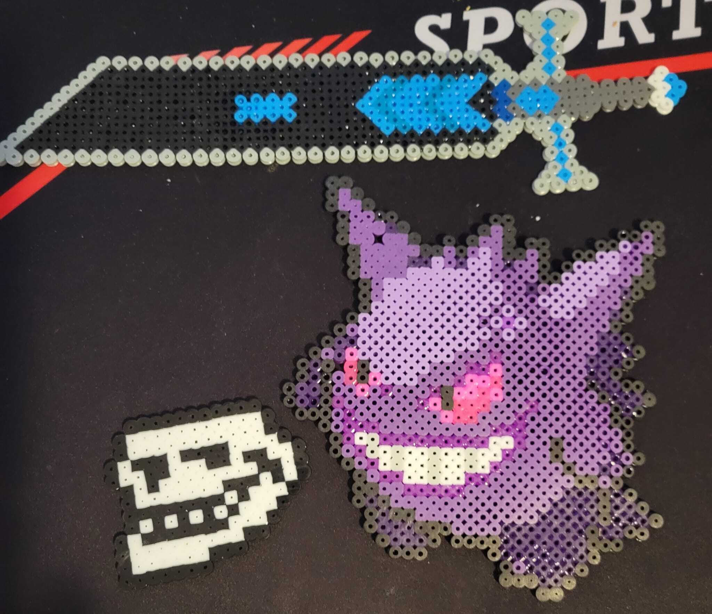
Écouter de la musique
Depuis mon plus jeune âge, j'aime la musique. Aujourd'hui encore, j'aime écouter différents genres de musique et découvrir de nouveaux artistes chaque jour.
À l'avenir, j'aimerais apprendre à jouer de la guitare électrique et faire ma propre musique.
(Cette chanson ne m'appartient pas, elle est de l'artiste Scattle.)
Montage vidéo
Cette année, j'ai eu un contact plus profond avec le montage vidéo, avant j'ai exploré ce médium mais maintenant je peux dire que c'est quelque chose que je fais normalement et que j'aime faire.
Bien que je n'aie pas encore de projet fixe, j'aimerais créer mon propre contenu et avoir une base de fans décente.
Animation
Bien que je n'aie aucune connaissance en matière d'animation, j'aime beaucoup la façon dont elle est réalisée et j'adore découvrir de nouvelles séries qui montrent leur potentiel tant au niveau de l'art que de l'animation elle-même.
J'aimerais en apprendre davantage sur ce médium et, à terme, être capable de réaliser des animations de bonne qualité.
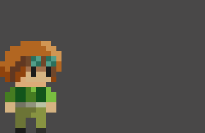
Mes travaux
Création de personnages
J'ai fait ce dessin il y a quelques temps, je voulais trouver un mélange entre un tueur silencieux mais sans grande expérience. Avec l'aide de mon ami Tuki, j'ai pu trouver un design qui me plaisait et qui était bon en général, même si plus tard j'essaierai de l'améliorer ou de le changer.
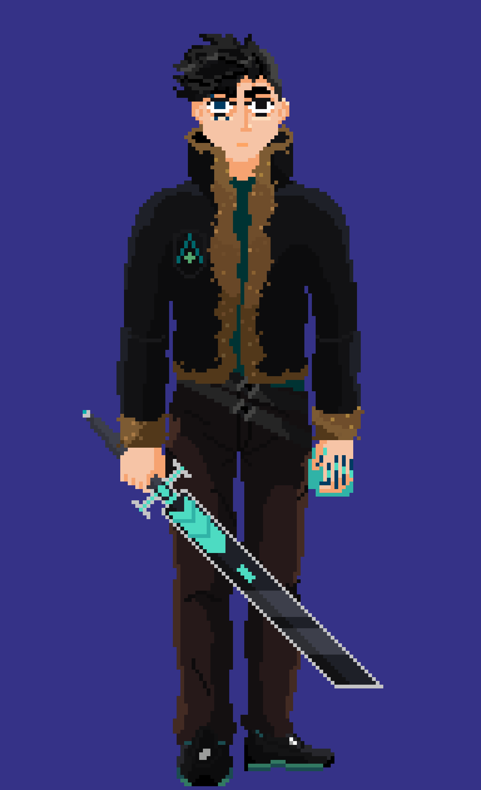
Mon personnage appelé Chiro
Animations
Cette animation a été créée pour un cadeau à un autre artiste appelé Sheo. Chaque fois que je fais une animation, j'essaie de la rendre aussi belle que possible et j'essaie d'élargir mes connaissances pour réaliser quelque chose de plus fluide et d'impressionnant.
Ce personnage appelle Bernardito appartient à
@SheoLb
Plus de cadeaux
Depuis ce travail, je me suis beaucoup intéressé aux portraits en pixel art. Je pourrais dire que c'est ce que je fais le mieux et ce que j'aime le plus faire.
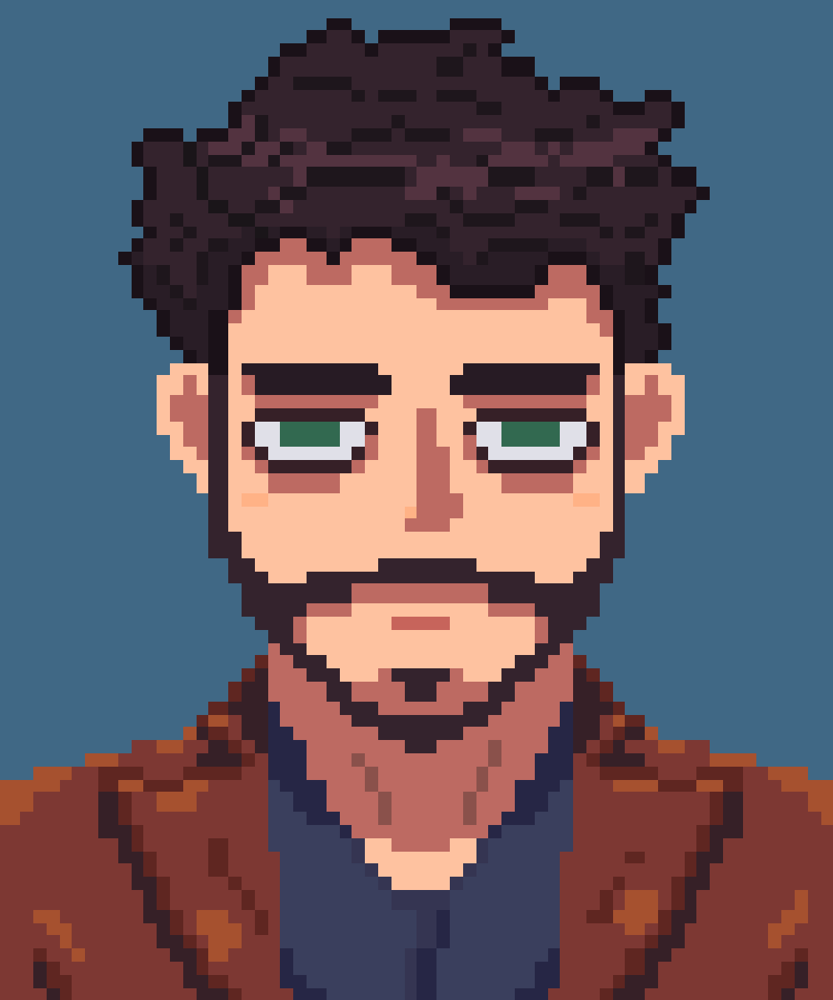
Cet homme est @Rebtain, co-créateur de la Coalition Pixel et critique de jeux vidéo.
Albums
J'ai décidé de dessiner cette pochette d'album pour tester comment je pouvais adapter un autre type d'art au pixel art. Pour l'instant, je n'ai pas encore fait ce genre d'art, mais je prévois de faire plus de ce genre de travail.
L'album le plus connu du grand groupe, GunsNRoses, Appetite for destruction.
Mes motivations
Des artistes, des œuvres, des créateurs de contenu et diverses autres choses qui me poussent à m'améliorer ou simplement à avoir mon point de vue sur certaines choses.
KSLV (Killer Sounds Lofi Visuals) Mon artiste préféré du genre phonkMon artiste préféré de tous les temps, Carpenter Brut.Mon créateur de contenu préféré, Sseth.L'animateur qui a façonné ma vie et m'a montré que de petits projets avec de grandes idées peuvent aller tout aussi loin, Alan Becker.Mon film préféré, Spiderman : into the spiderverse. Sa suite sortira en 2023.Mon jeu vidéo et mon œuvre d'art préférés, Hotline Miami 1 & 2.


 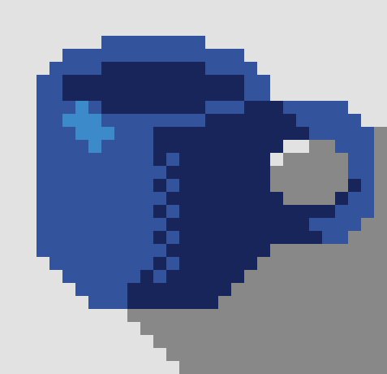
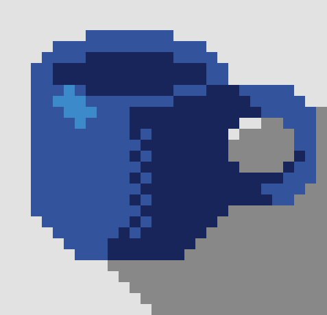


 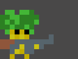
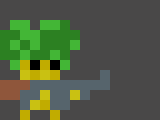

 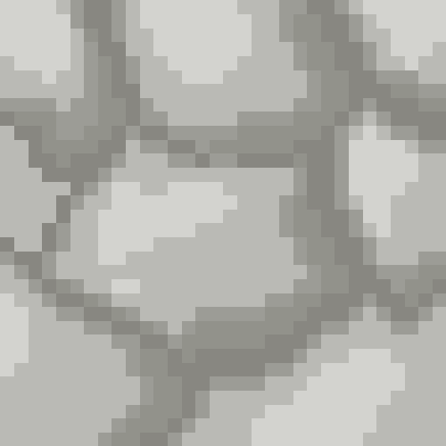
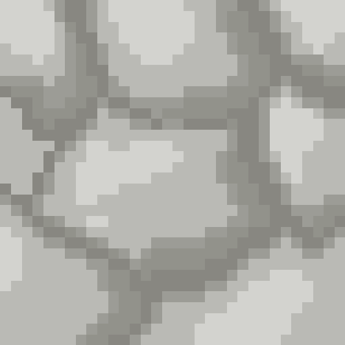
 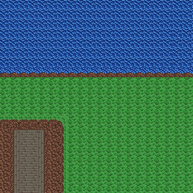
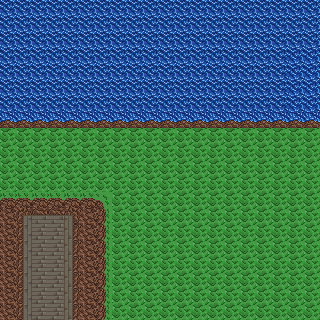


 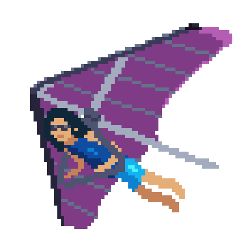
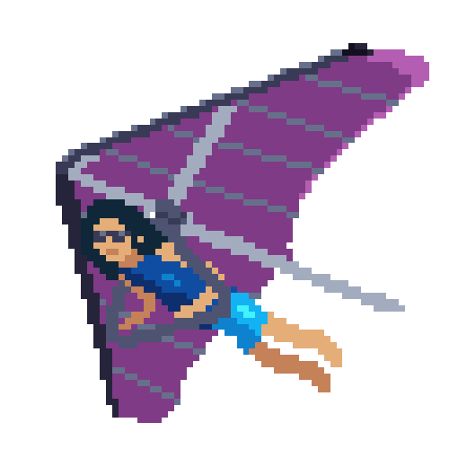
 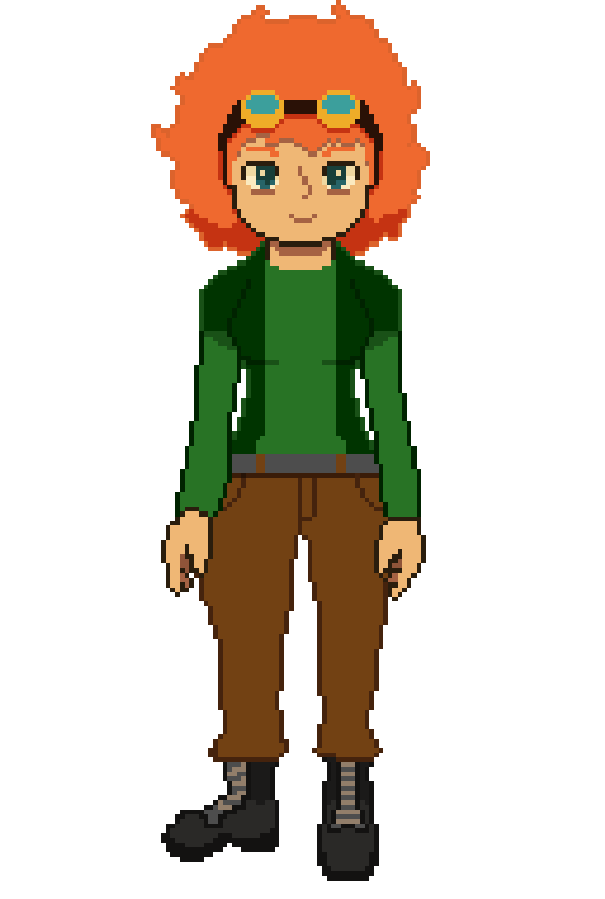
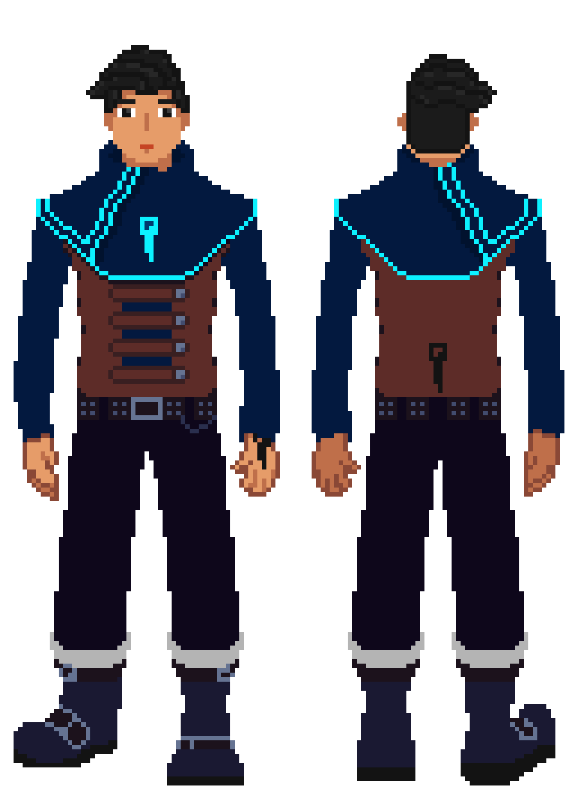
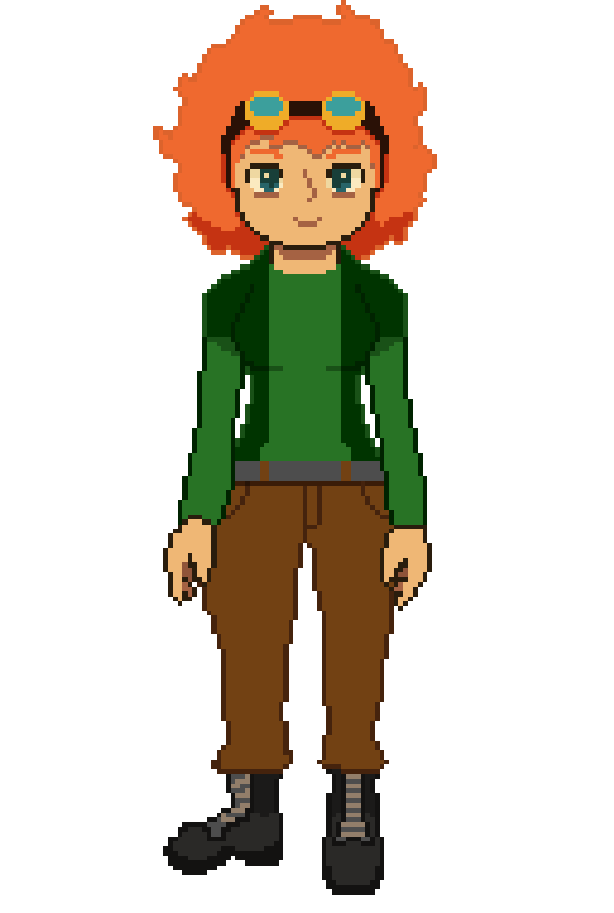
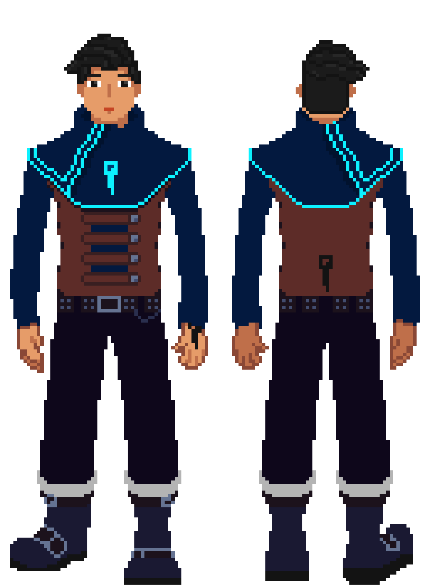